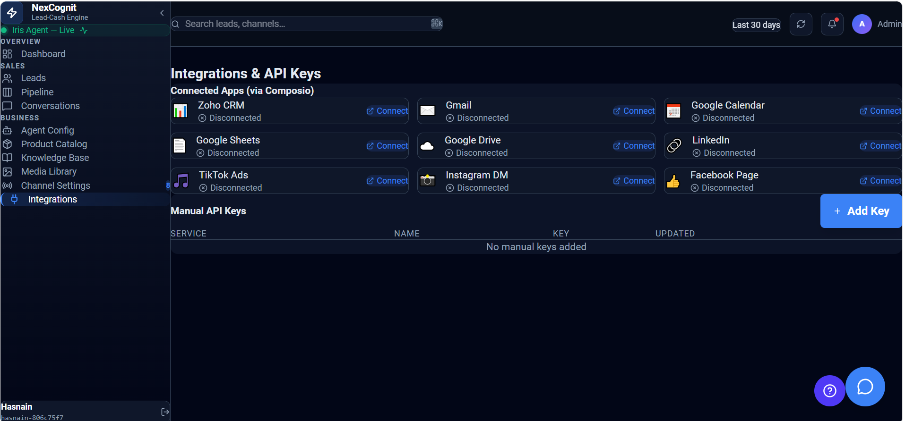

Integrations
Integrations connect NexCognit with the external tools your team already uses in the sales workflow. They help keep lead, meeting, and follow-up activities connected so work moves forward without manual handoffs.
Integrations overview
With integrations in place, NexCognit can work with your CRM, calendar, and communication tools to create a more connected customer journey. This reduces friction between conversations and the next follow-up action.

What Integrations are used for
Integrations are used to connect NexCognit with external systems that support the sales process. They help move information between tools so your team can keep up with leads, meetings, and follow-up work from one coordinated workflow.
Zoho CRM
NexCognit can sync lead data into Zoho CRM so new conversations and qualified leads are captured in the system your team already uses. This helps maintain a central record of customer activity and supports smoother handoffs across the sales process.
Google Calendar
Google Calendar integration allows meetings and demos to be booked directly through the workflow. This makes it easier to move from an interested conversation to a scheduled follow-up without switching between systems.
Gmail / follow-up tools
Gmail and follow-up tools can be used to automate messages or emails after a customer interaction. This helps your team keep communication timely and consistent while reducing repetitive manual work.
Why integrations help keep workflows connected
Integrations help ensure that lead data, scheduling, and follow-up actions stay connected across the full sales process. When systems share information properly, teams can respond faster and avoid losing momentum after a customer conversation.
Things to know
- Integrations make it easier to keep customer data in sync across tools.
- Calendar and follow-up integrations help reduce manual steps for your team.
- Connecting the right systems can improve visibility and speed across the sales workflow.